Honda ad
A Honda commercial for Ntropic. Mr. Pinoux supervised on set — which on this job meant guarding a square. Closed streets in a quiet city north of Los Angeles, a four o'clock call, and a blue car with a Russian arm swinging over it.
Une publicité Honda pour Ntropic. Mr. Pinoux était superviseur sur le plateau — ce qui, sur ce projet, voulait dire défendre un carré. Des rues bloquées dans une ville calme au nord de Los Angeles, une convocation à quatre heures, et une voiture bleue avec une grue-bras qui tourne autour.
The photographs keep their own call sheet. Ten to five in the morning, still black, the crew unloading under work lights. Twenty past five, the street ahead through a windscreen. Quarter past six, the first daylight arriving. Half past nine, full sun on a gravel lot with the tailgate open. One day, 14 August 2021, run from the dark end.
Les photos tiennent leur propre feuille de service. Cinq heures moins dix du matin, il fait encore nuit noire, l'équipe décharge sous les lampes de travail. Cinq heures vingt, la rue devant, vue à travers un pare-brise. Six heures et quart, la première lumière du jour. Neuf heures et demie, plein soleil sur un terrain en gravier, hayon ouvert. Une journée, le 14 août 2021, prise par le bout sombre.
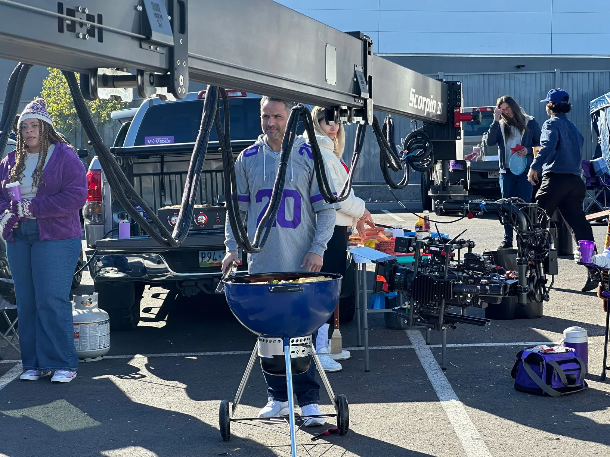
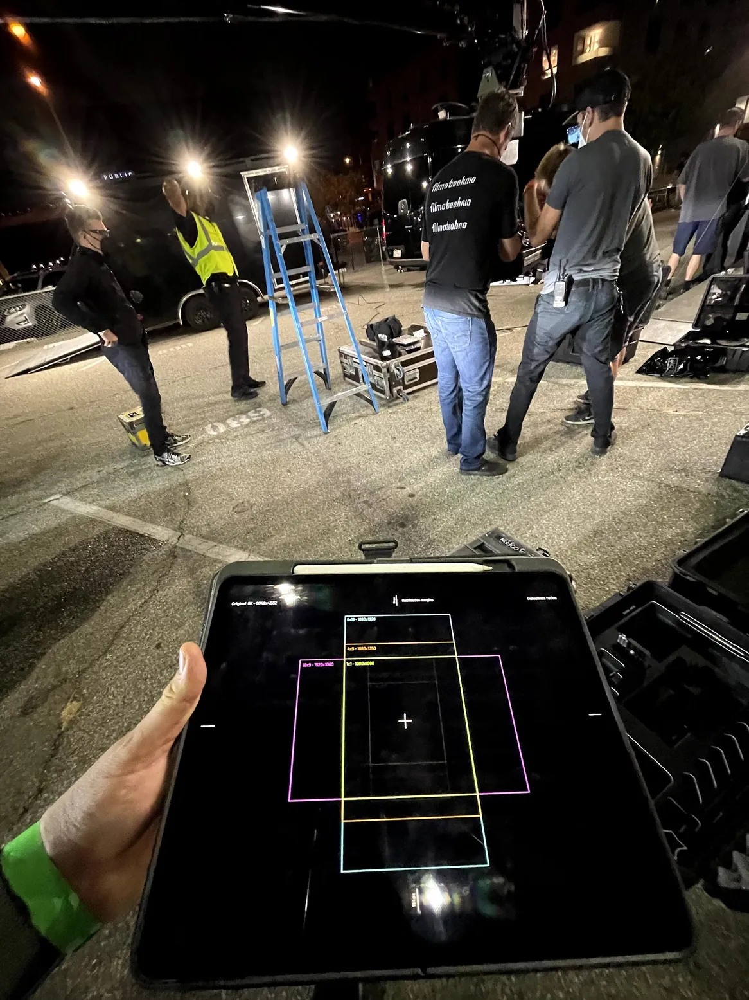
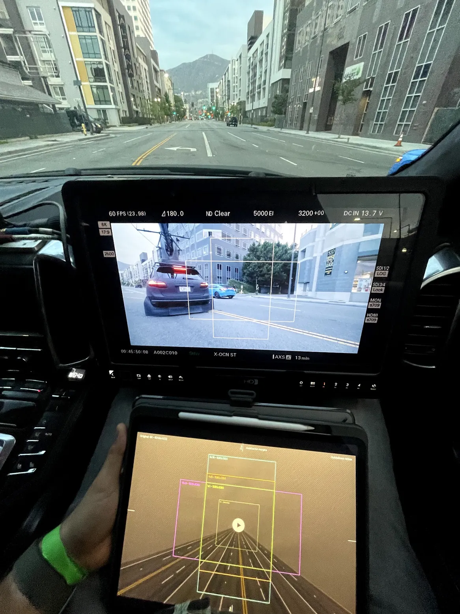
Everyone on the street is masked. Everyone had signed something and sent a doctor's form ahead of the day. It was tiresome, and it was the price of shooting at all that summer. The empty streets in these pictures were emptied on purpose, with permits and police at both ends.
Tout le monde est masqué dans la rue. Tout le monde avait signé quelque chose et envoyé un papier du médecin avant le jour J. C'était pénible, et c'était le prix à payer pour tourner cet été-là. Les rues vides de ces images ont été vidées exprès, avec les permis et la police aux deux bouts.
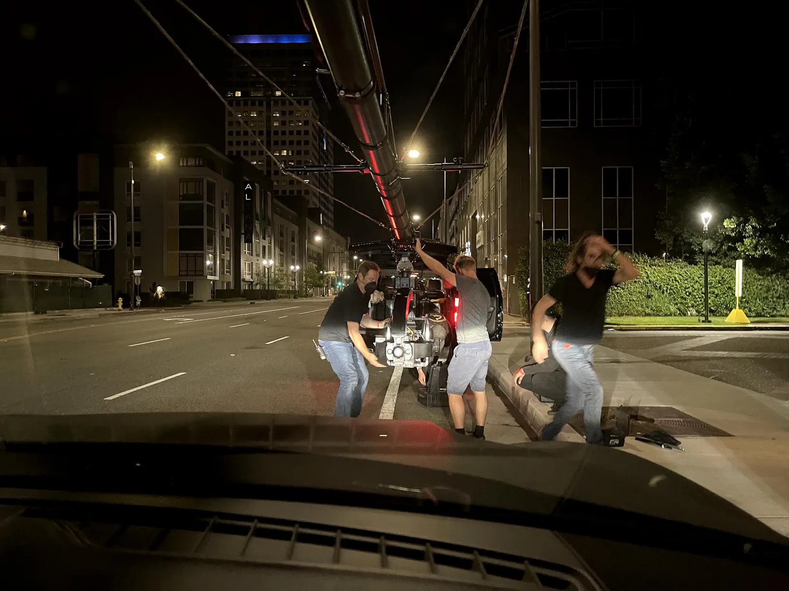
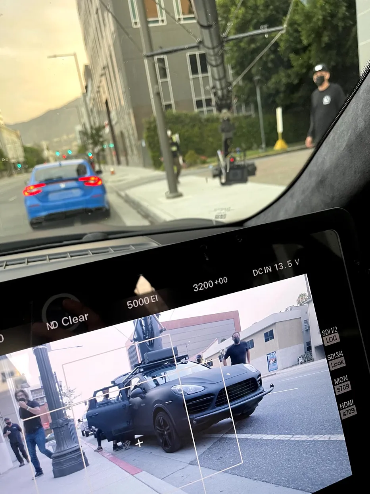
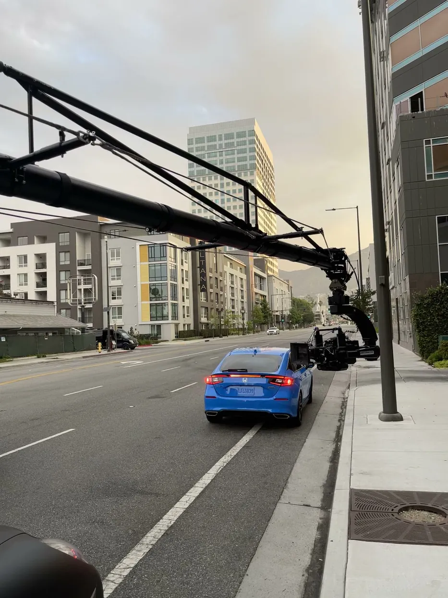
The film had to come out in every shape at once — sixteen by nine, nine by sixteen, square, whatever the platform wanted. So it was shot large and the crops were pulled from one negative. On the tablet you can see the nested guides: the wide frame, and inside it the vertical, and inside that the square.
Le film devait sortir dans toutes les formes à la fois — seize-neuvièmes, neuf-seizièmes, carré, selon ce que réclamait la plateforme. Il a donc été tourné large, et les recadrages ont été tirés du même négatif. Sur la tablette on voit les repères emboîtés : le cadre large, dedans le vertical, et dedans encore le carré.
Which is the whole of the supervising job that day. A director composes for the picture in front of him, and the picture in front of him is the wide one. If the car drifted out of the centre square nobody would notice until the vertical cut, by which point it is gone — you cannot recover what was never inside the crop. So the note gets repeated, shot after shot, until it stops needing to be.
C'est tout le métier de superviseur ce jour-là. Un réalisateur compose pour l'image qu'il a devant lui, et l'image qu'il a devant lui, c'est la large. Si la voiture sortait du carré central, personne ne le voyait avant le montage vertical — et là c'est trop tard, on ne récupère pas ce qui n'a jamais été dans le recadrage. Donc on répète la remarque, plan après plan, jusqu'à ce qu'elle n'ait plus besoin d'être faite.
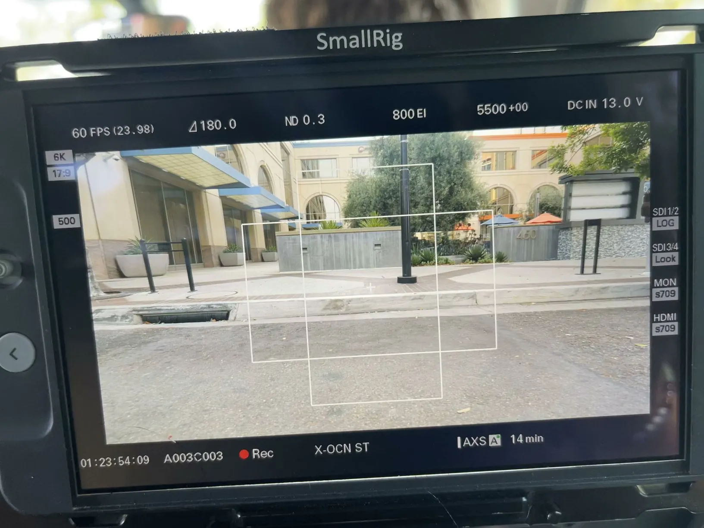
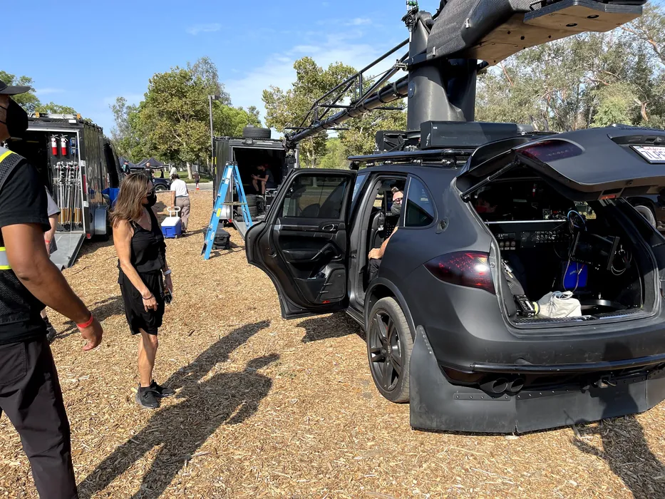
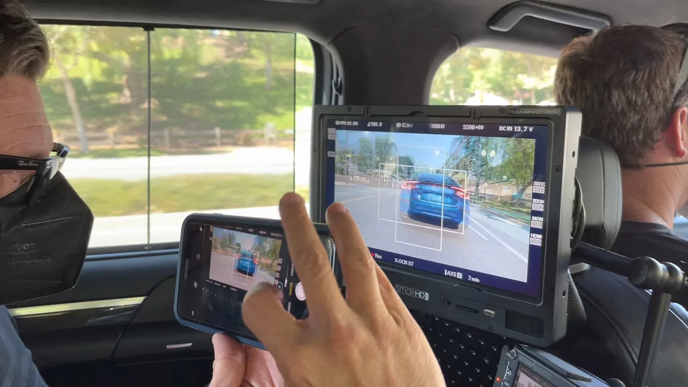
A Russian arm off a tracking vehicle, the camera swung out over the hero car and driven alongside it. The monitors keep the record of the rest: a Sony VENICE at 6K, sixty frames on a 23.98 base, a hundred and eighty degrees, 800 EI, X-OCN onto AXS cards with fourteen minutes left. A driver sits in the tracking car with a radio, talking the hero cars through it. Very early, very quiet, and quite a lot of fun.
Un bras russe monté sur un véhicule travelling, la caméra déportée au-dessus de la voiture principale et roulant à côté d'elle. Les moniteurs gardent la trace du reste : une Sony VENICE en 6K, soixante images sur une base à 23,98, obturateur à cent quatre-vingts degrés, 800 EI, du X-OCN sur cartes AXS avec quatorze minutes restantes. Un conducteur est dans le véhicule travelling avec un talkie, et guide les voitures clés. Très tôt, très calme, et franchement plaisant.
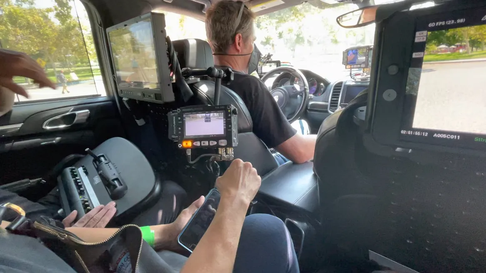
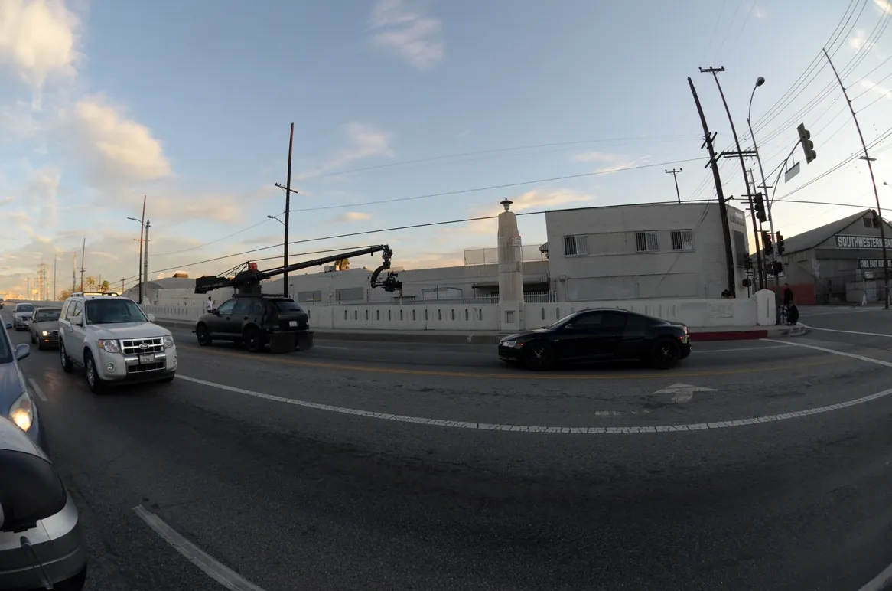